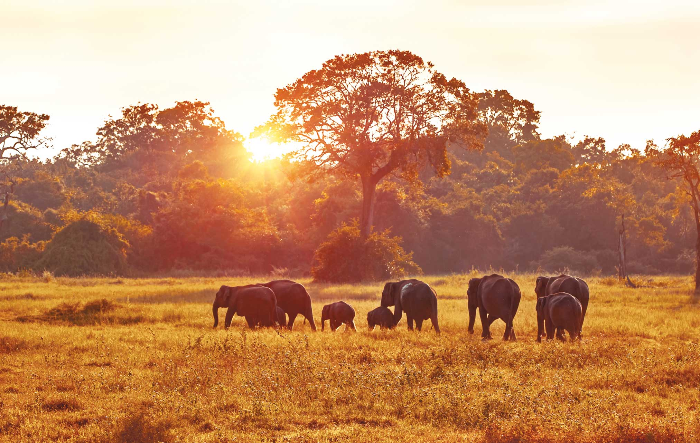
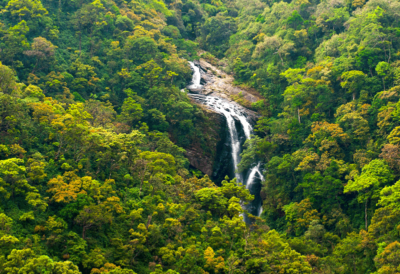
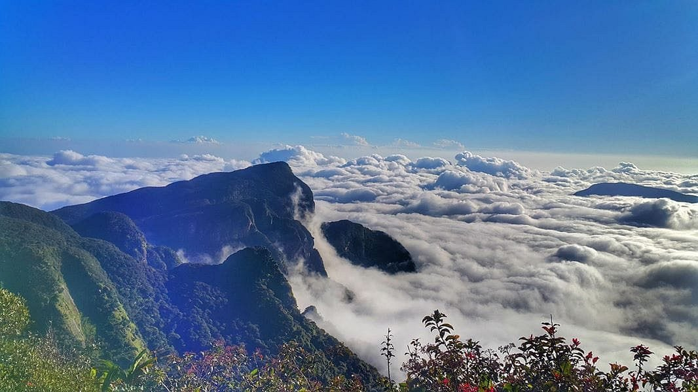
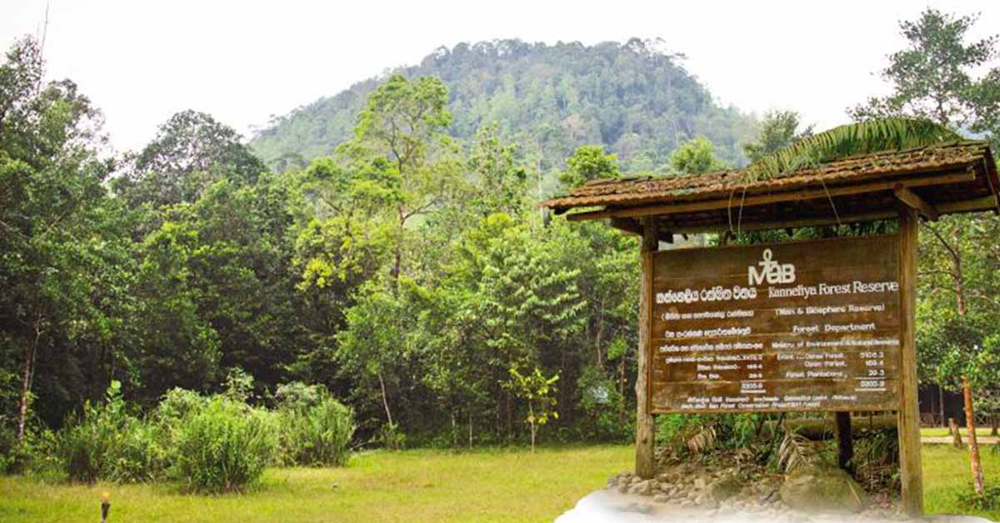
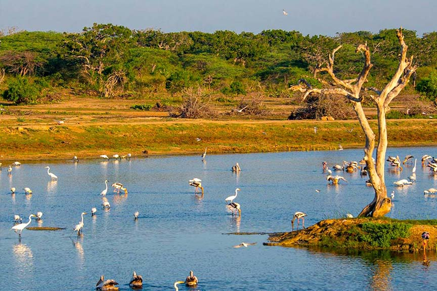
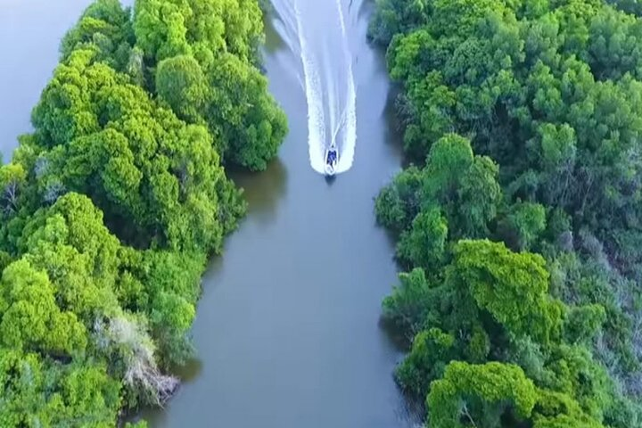

Protected areas.
- Sinharaja Rainforest Reserve.
- Horton Plains National Park.
- Knuckles Mountain Range.
- Kanneliya-Dediyagala-Nakiyadeniya Forest Complex.
- Minneriya National Park.
- Gal Oya National Park.
- Bundala National Park.
- Muthurajawela Wetlands.
- Wasgamuwa National Park.

Sinharaja Rainforest Reserve.

Horton Plains National Park.

Knuckles Mountain Range.

Kanneliya-Dediyagala-Nakiyadeniya Forest Complex.

Minneriya National Park.

Gal Oya National Park.

Bundala National Park.

Muthurajawela Wetlands.

Wasgamuwa National Park.